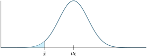
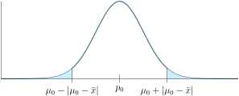

Section 1.2 Sampling
It's rare that we ever have the oppurtunity to observe all possible instances of a random variable. In practice we're generally not able to do so. Thus, we take a sample and attempt to infer properties of the population.
Definition 1.2.1.
A population is a target of statistical inquiry, a sample represents a subset of the population, and is often a very small fraction of the population.
Activity 1.2.1. Stealing and Class.
In a study of the relationship between socio-economic class and unethical behavior, 129 University of California undergraduates at Berkeley were asked to identify themselves as having low or high social-class by comparing themselves to others with the most (least) money, most (least) education, and most (least) respected jobs. They were also presented with a jar of individually wrapped candies and informed that the candies were for children in a nearby laboratory, but that they could take some if they wanted. After completing some unrelated tasks, participants reported the number of candies they had taken.
- Identify the population in this study.
- Identify the sample in this study.
Activity 1.2.2. Pollution and Pre-Term Births.
Researchers collected data to examine the relationship between air pollutants and preterm births in Southern California. During the study air pollution levels were measured by air quality monitoring stations. Specifically, levels of carbon monoxide were recorded in parts per million, nitrogen dioxide and ozone in parts per hundred million, and coarse particulate matter (PM10) \(\mu g/m^3\text{.}\) Length of gestation data were collected on 143,196 births between the years 1989 and 1993, and air pollution exposure during gestation was calculated for each birth. The analysis suggested that increased ambient PM10 and, to a lesser degree, CO concentrations may be associated with the occurrence of preterm births
- Identify the population in this study.
- Identify the sample in this study.
Subsection 1.2.1 Observational Studies and Sampling
Definition 1.2.2.
An observational study is one where no treatment is explicitly given or withheld. Correlations observed in observtional studies cannot be used to infer causal relationships. Data gained here can be used to form hypothesis which then is tested through experiments.
Activity 1.2.3. Suncreen Causes Cancer.
Suppose an observational study tracked sunscreen use and skin cancer, and it was found that the more sunscreen someone used, the more likely the person was to have skin cancer. Does this mean sunscreen causes skin cancer?
To collect observational data for a study, we must then sample the population.
Activity 1.2.4. How to Sample.
Suppose that a group of students wanted to investigate anxiety levels of their fellow students regarding academic success. They decide to interview their colleagues, but because of the size of the school, interviewing every student is not feasible. Consider the following ways in which they could find a sample of students to interview. Which would be good ways to select a sample? What are some advantages or disadvantages of each method.
- Randomly select a group of students from the school roster to interview.
- Interview students coming to the tutoring center.
- Interview students in Math classes.
- Select a random group of seniors to interview.
- Randomly select a a random group of Freshman, a random group of Sophmores, a random group of Juniors and a random group of Seniors to interview.
- Select a class at random and interview the students in the class.
Definition 1.2.3.
We discuss four sampling techniques.
Simple Random Sampling takes the population and completely randomly selects a random subset.
Figure 1.2.4. A Simple Random Sample Stratified Random Sampling takes the population breaks into into groups called strata. We choose the cases within each strata to be very similar to each other. We then randomly sample from each strata.
Figure 1.2.5. A Stratified Random Sample Cluster Sampling takes the population breaks into into groups called clusters. We then randomly select some number of clusters and sample everone within them.
Figure 1.2.6. A Cluster Sample Multi-stage Sampling takes the population breaks into into groups called clusters. We then randomly sample within each cluster.
Figure 1.2.7. A Multi-Stage Sample
Activity 1.2.5. Types of Sampling.
For each of the following, decide which type of four sampling types, if any, were used:
- A soccer coach selects 6 players from a group of boys aged 8 to 10, 7 players from a group of boys aged 11 to 12, and 3 players from a group of boys aged 13 to 14 to form a recreational soccer team.
- A pollster interviews all human resource personnel in five different high tech companies.
- A high school educational researcher interviews 50 high school female teachers and 50 high school male teachers.
- A medical researcher selects divides the list of cancer patients by starting letter of their last name and selects 5 patients for each letter.
- A high school counselor uses a computer to generate 50 random numbers and then picks students whose names correspond to the numbers.
- A student interviews classmates in his algebra class to determine how many pairs of jeans a student owns, on the average.